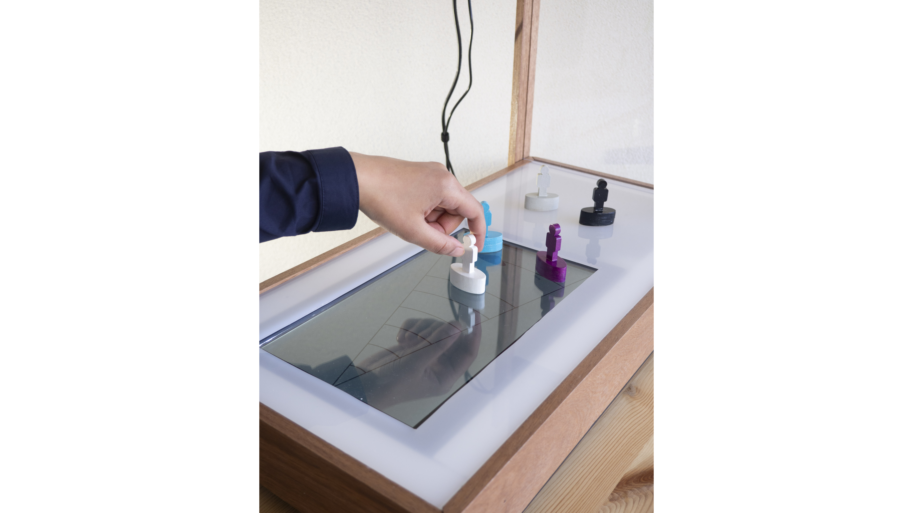

July 2019
How can design support a moral decision making process of individuals and organisations in specific wicked problem cases?
Others Eyes is a tool designed to explore the different perspectives on a problem. First, one person becomes aware of her/his perspectives through the positioning of characters on the Perception board which create different views on the problem case at hand. Only after this process the perceptions of others can be taken into account. This approach leads to a better understanding and more enriched dialogue between professionals.
Through the enriched perception of all the participants a more cohesive decision is taken which does right to all who are involved in this case.
Others Eyes supports the leader inside a coalition of collaborating organisations working on wicked problems and supports professionals during moral decision making process within a complex organisational environment.